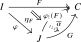

Kan extensions are universal ways to extend a functor along another functor. This section defines them as adjoint objects to restriction and derives the pointwise formulas used later in the book.
Definition 21.4.1. Let \(I\), \(J\) and \(C\) be \(\infty \)-categories and let \(\phi \colon I \to J\) be a functor.
- (1)
-
Given a functor \(F\colon I \to C\), a left Kan extension of \(F\) along \(\phi \) is a left adjoint object to \(F\) under the restriction functor \(\phi ^*\colon \Fun (J,C) \to \Fun (I,C)\). More explicitly, it is a functor \(\phi _!(F)\colon J \to C\) equipped with a natural transformation \(\eta _F\colon F \to \phi ^*\phi _!(F)\) such that for every other functor \(G\colon J \to C\) the composite \[ \Nat (\phi _!(F),G) \xrightarrow {\phi ^*} \Nat (\phi ^*\phi _!(F), \phi ^*G) \xrightarrow {- \circ \eta _F} \Nat (F,\phi ^*G) \] is an equivalence.

- (2)
-
Dually, a right Kan extension of \(F\) along \(\phi \) is a right adjoint object to \(F\) under \(\phi ^*\), i.e. a functor \(\phi _*(F)\colon J \to C\) equipped with a transformation \(\eta _F\colon \phi ^*\phi _*(F) \to F\) inducing equivalences \[ \Nat (G,\phi _*(F)) \iso \Nat (\phi ^*(G),F) \] for all \(G\colon J \to C\).
If every functor \(F\colon I \to C\) admits a left Kan extension along \(\phi \), then by Corollary 21.1.5 these left Kan extensions assemble into a left adjoint \[ \phi _!\colon \Fun (I,C) \to \Fun (J,C) \] to the restriction functor \(\phi ^*\colon \Fun (J,C) \to \Fun (I,C)\), called the functor of left Kan extension along \(\phi \). Dually, if every functor \(F\) admits a right Kan extension along \(\phi \) then \(\phi ^*\) admits a right adjoint \[ \phi _*\colon \Fun (I,C) \to \Fun (J,C) \] called right Kan extension along \(\phi \).
Observation 21.4.2. Note that the left Kan extension of a functor \(F\colon I \to C\) along the functor \(p_I \colon I \to *\) is precisely a colimit of \(F\). Dually, a right Kan extension of \(F\) along \(p_I\) is a limit of \(F\).
The most useful and common form of Kan extensions are the pointwise Kan extensions: those that can be computed using explicit pointwise formulas. In practice, the only Kan extensions one cares about are the pointwise Kan extensions.
Theorem 21.4.3. Let \(F\colon I \to C\) and \(\phi \colon I \to J\) be functors.
- (1)
-
Assume that for every object \(j\) of \(J\) the composite functor \[ I_{/j} \xrightarrow {s} I \xrightarrow {F} C \] admits a colimit in \(C\). Then these colimits assemble into a functor \[ \phi _!(F) \colon J \to C. \] Furthermore, the maps \[ F(i) \simeq \colim _{i' \in I_{/i}} F(i') \to \colim _{i' \in I_{/\phi (i)}} F(i') = \phi _!(F)(\phi (i)) = \phi ^*\phi _!(F)(i) \] assemble into a natural transformation \(\eta _F\colon F \to \phi ^*\phi _!(F)\) exhibiting \(\phi _!(F)\) as a left Kan extension of \(F\) along \(\phi \).
- (2)
-
Dually, if for every \(j\) in \(J\) the composite \[ I_{j/} \xrightarrow {t} I \xrightarrow {F} C \] admits a limit in \(C\), then these limits assemble into functor \[ \phi _*(F) \colon J \to C \] which is a right Kan extension of \(F\).
Proof. See Reference ?, Reference ? of [Cisinski et al. (2026)]. □
Definition 21.4.4. If the condition in (1) is satisfied, we say that \(F\) admits a pointwise left Kan extension along \(\phi \), and if the condition in (2) is satisfied we say that \(F\) admits a pointwise right Kan extension along \(\phi \).
In general, the Kan extension of \(F\) might not actually be an ‘extension’, in the sense that the unit map \(F \to \phi ^*(\phi _!F)\) and counit map \(\phi ^*(\phi _* F) \to F\) may not be invertible. However, this is the case whenever \(\phi \) is fully faithful, explaining the terminology. For this we need the following alternative characterization of fully faithful functors:
Lemma 21.4.5. Let \(F\colon C \to D\) be a functor. Then the following conditions are equivalent:
- (1)
-
The functor \(F\) is fully faithful;
- (2)
-
For every object \(y\) of \(C\) the commutative square
is a pullback square;
- (3)
-
For every object \(x\) of \(C\) the commutative square
is a pullback square.
Proof sketch. We prove the equivalence between (1) and (2); the equivalence between (1) and (3) is dual. The two vertical functors in the commutative square in (2) are right fibrations, in a sense to be explained below in Chapter 23. One can prove that a functor between two right fibrations is an equivalence if and only if it induces equivalences on all fibers. Since the induced map on fibers is precisely the map \(\Hom _C(x,y) \to \Hom _C(Fx,Fy)\), it follows that condition (2) is equivalent to full faithfulness of \(F\). □
Lemma 21.4.6. Assume that \(\phi \colon I \hookrightarrow J\) is a fully faithful functor, and let \(F\colon I \to C\) be a functor.
- (1)
-
Assume that \(F\) admits a pointwise left Kan extension \(\phi _!(F)\) along \(\phi \). Then the unit map \(\eta _F\colon F \to \phi ^*\phi _!(F)\) is a natural isomorphism.
- (2)
-
Dually, if \(F\) admits a pointwise right Kan extension \(\phi _*(F)\) along \(\phi \) then the counit \(\epsilon _F\colon \phi ^*\phi _*(F) \to F\) is a natural isomorphism.
Proof. We prove (1); the proof of (2) is dual. By Axiom J we may check that \(\eta _F\) is a pointwise isomorphism. For an object \(i\) of \(I\), the map \(F(i) \to \phi ^*\phi _!(F)\) is induced by the map of slices \[ I_{/i} \to I_{/\phi (i)}, \quad (i',f\colon i' \to i) \mapsto (i',F(f)\colon F(i') \to F(i)). \] But since \(\phi \) is fully faithful, this functor is an equivalence by Lemma 21.4.5, and it follows that \(\eta _F(i)\) is an isomorphism. □
Generated from the authoritative LaTeX source.